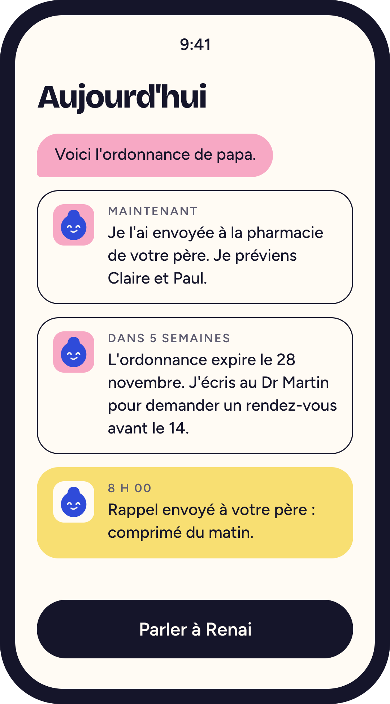

Suivi des démarches d'aide
APA, PCH, aides au logement, dossiers MDPH : où en est chaque demande, quelle pièce manque, quelle relance faire.
Renai aide ceux qui s'occupent d'un proche âgé ou en situation de handicap dans ses démarches médicales et administratives, et coordonne tout son entourage : famille, aide à domicile, soignants.
Nous cherchons des organismes prêts à tester Renai avec leurs adhérents.


Les familles se coordonnent déjà, souvent sur WhatsApp. Ce qui les épuise, c'est le temps, la présence et le nombre de choses à tenir en même temps.
« C'est tout gérer en même temps. »Assistante en soins gérontologiques, entretien du 13/10/2026.
« La charge mentale. La gestion des rendez-vous, des non-réponses médicales. »Plateforme de répit, entretien du 13/10/2026.
« On leur demande d'utiliser des outils qu'ils n'ont pas. »Plateforme de répit, au sujet de la prise de rendez-vous en ligne à 80 ans.

C'est le premier module de Renai.
Quatre tâches précises, choisies parce qu'elles reviennent sans cesse dans le quotidien des aidants.
L'aidant prend l'ordonnance en photo dans l'appli. Elle est enregistrée dans le suivi partagé.
Fin des papiers perdus entre deux visites.
L'ordonnance part automatiquement à la pharmacie choisie par la famille.
Un déplacement en moins pour l'aidant.
Renée, l'assistante IA de Renai, écrit au médecin prescripteur pour demander un rendez-vous, une à deux semaines avant l'expiration de l'ordonnance.
Renai demande. Le médecin décide. Aucun rendez-vous n'est garanti.
Une série de notifications rappelle au parent de prendre ses médicaments aux bonnes heures.
Moins de prises oubliées, sans appel quotidien de l'aidant.
Proposer un service aux aidants ne suffit pas. Il faut savoir s'il est utilisé, et à quoi il sert.
À la fin, vous décidez avec des résultats en main.
C'est la première question des familles, et la vôtre. Nous ne revendiquons aujourd'hui aucune certification.
Le cadre d'hébergement et de traitement des données fait partie de ce que nous voulons valider avec vous avant tout pilote.
Renée demande un rendez-vous au médecin qui a fait l'ordonnance. C'est tout. Elle ne donne aucun avis médical et ne touche à aucun traitement.
Les règles d'envoi, comme la validation par la famille avant chaque message, sont à définir ensemble pendant le pilote.
Non, et nous ne le promettons pas. Sur le terrain, on nous a parlé de 7 à 8 mois d'attente en gériatrie dans certains territoires.
Viser une à deux semaines avant l'expiration n'est pas réaliste partout. Mesurer ce que Renée change, ou ne change pas, est un objectif du pilote.
L'envoi automatique suppose que la pharmacie accepte de recevoir l'ordonnance ainsi. C'est un point que nous devons encore tester.
C'est vrai. C'est l'aidant qui utilise l'appli. Les rappels de prise, eux, supposent un téléphone chez le parent. Nous le testerons avec les familles du pilote.
Nous ne vous demandons pas de vous engager. Nous cherchons d'abord à vérifier, avec un groupe restreint, si le service réduit vraiment la charge des aidants.
La question du financement vient après, avec des résultats en main.
Laissez-nous vos coordonnées. Nous revenons vers vous pour fixer un échange.